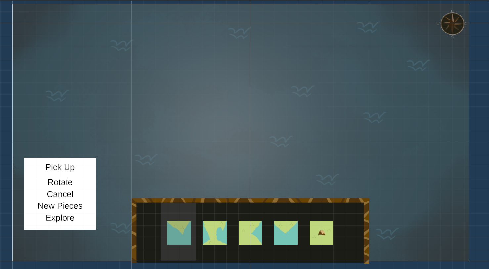
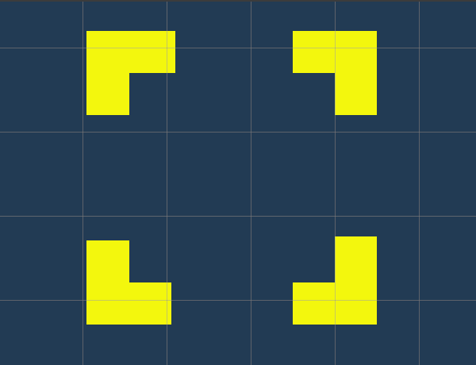
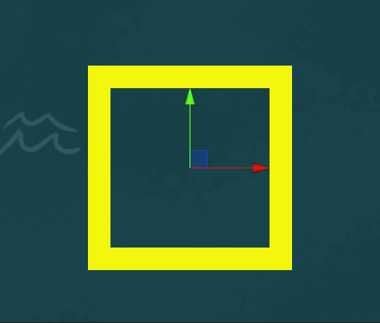
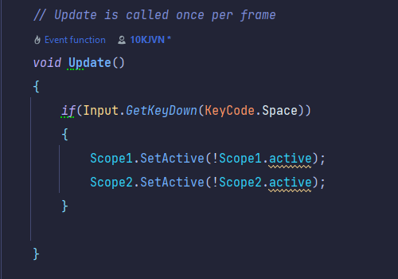

Vertical Slice
Project Status: Finished
Project Type: Group
Project Duration: 8 weeks
Software Used: Unity
Languages Used: C#
Primary Role(s): UI Programmer
Team: 4 devs, 4 artists
About Vertical Slice
Vertical Slice is a project in which we had to recreate 10 seconds from a game on a 1:1 scale. It marked the second collaboration between Artists and Developers.
My Features
- UI
Intro
In this project i mainly focused on putting together the UI.
Together with one of the artists within our team i recreated the UI elements seen in the gameplay footage with 2D Objects.
Closely inspecting the assets at Game UI Database.
Canvas Template:

I've added placeholders for the main UI elements seen in the game.
Buttons highlight when hovered over.
Development
The development of Carto was a little different than other projects i've worked on since we already have a concrete visual of what we were working to. At the start of the sprint we were brainstorming on the techniques and strategies the original creators may have used to recreate these assets. We searched more gameplay footage of Carto and were excited to recreate other parts of the game, Until we were attended by our teachers that we needed to only focus on the dedicated 10 seconds they've provided to us.
An in-game gif

My colleagues made the Map Placement class.
I made the script for the 'Scope' as i like to call it to change when picking up a map piece.
The 10 seconds we had to recreate:

The main Mechanics we've seen off the bat would be difficult to recreate,
Due to us not knowing where to start or how they'd function the best.
Conclusion
In The end of this trajectory i learned quite alot about the intricasies of having to pay attention to every little detail provided in these games. And that you can perform all sorts of tricks to make a 2D game in a 3D unity scene for example, we just used camera angles and canvases to make the game appear like its 2 Dimension, While in reality, in our case it isn't.
This is when you click on the map:
This is when you've selected the map:

Usually these would be sprites, but i went on ahead and made them myself using only 2D blocks.
They also shift from shape whenever a map piece is selected, or spacebar is pressed!
Even though i haven't really contributed as much as i wished i did in this project i am still proud of the things i have achieved and learned from this project.
Simple Script:
What the code above does is switch the Active object to Inactive and vice versa.